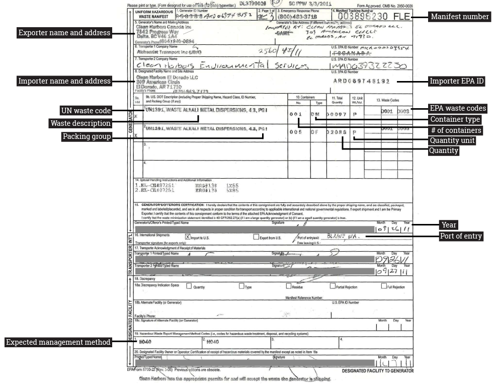

About the Data
The data used on this website were obtained through a series of Freedom of Information Act (FOIA) requests to the United States Environmental Protection Agency (EPA). The EPA provided us with compiled import data for 2007 and 2009; compiled export data for 2005-2009; scans of shipping manifests for waste imported for 2010, 2011, and 2012; and annual reports from exporters for 2011 and 2012. The current dataset is based on these records. We are also in the process of acquiring and processing shipping manifests (imports) for 2013, 2014, and 2015 and annual reports (exports) for 2010, 2013, 2014, and 2015.
The example manifest below highlights the information captured by our dataset. Using the manifests and the compiled data, we assembled a series of spreadsheets that included the following attributes: importer names and locations, exporter names and locations, various EPA and United Nations codes, waste type, waste amounts, and units the waste was reported in, port of entry city, and any discrepancies or uncertainties that were either noted on the manifest or that we noticed upon entering the data into our spreadsheets.

As the faded type and handwritten corrections to the sample manifest hint, these data required cleaning in order to compare and visualize attributes. After entering all attributes that we could into the spreadsheet, we processed the import data, using the following procedures.
Note: This section may be updated as we acquire and complete data entry for 2013, 2014, and 2015 imports, and as we process the export data.
- Clear 2006 and 2014 data. A complete set of data for 2006 is unavailable, and data entry for 2014 is incomplete at this point.
- Clear entries without a quantity.
- Clear entries where the exporting country was not Canada or Mexico.
- Convert quantities with (EST) or (APPROX) to the value that comes before (EST) or (APPROX). Manifests often reported estimated or approximated quantities, and we will eventually examine these estimates and approximations. For now, we use them as-is.
- Clear entries without a unit.
- Clear entries without an address for the exporter. In some cases, we were able to interpolate the address based on other attributes (e.g., facility name, city, province, etc.), and so kept these records. For the most part, though, without an address, it is impossible to geolocate and map the exporter.
- Clear entries without an importer address. Note: this was rare.
- Standardize importer addresses to match a lookup table we created (e.g., 625 WANDA STREET should be 625 WANDA ST). Note: importer name, address, etc. is for the facility that actually received the waste. Parent company data was collected, but scrubbed from this dataset becasue the focus of our project is on the actual sites that imported the waste.
- Fill in importer latitude and longitude values using lookup table.
- Fill in exporter latitude and longitude values using lookup table.
- Standardize EPA keys. Each facility that imports waste had a single identification key assigned to it by the EPA. Due to human error (on our part, in the manifests, and/or because manifests were handwritten), these varied in the original spreadsheet.
- Create exporter keys (E + latitude first two digits + A + longitude last four decimal digits -- E and A were chosen arbitrarily). In order to create interactive maps of the waste trade, we needed to assign each waste exporter a unique ID.
- Convert units to kilograms and liters (units often included pounds, tons, gallons, etc.).
- Clear entries with neither a waste description nor a UN code (an international identifier describing the type of waste). If a shipment contained one of these, it remained in the dataset. If a shipment contained neither, there was no way to tell what the waste was.
- Look up UN codes (e.g., UN3077) and create a field that explained what each code means (e.g., “Environmentally hazardous waste, not otherwise specified” for UN3077).
- If there was a waste description but no UN code, set UN code description to “Not provided.”
- If there was a UN code but no waste description, set UN code description to "Unknown.”
- Look up expected management codes (e.g., H141) and create a field that explains what each code means (e.g., “stored and transferred off-site” for H141).
- If there was no management code, set management code to "Not provided."
- If there were multiple management codes (e.g., H040; H141), then "Multiple management methods" was indicated.
- If a management code was not known as a listed managment code (e.g., "A2342"), set management code to "Unknown."
- Create a “Company” field with standardized company names. Look up the company that owns the importing facility, based on background research on the corporate structure of these firms/facilities. For example, “Clean Harbors Env Services,” “Clean Harbors El Dorado LLC,” and “Safety-Kleen” were standardized to “Clean Harbors” because they are all part of the company so named. This field is useful for allowing comparison of multi-facility companies, but it is also limited in that it is based on the current state of companies and mergers and does not account for historical change: Safety-Kleen, for example, was not part of Clean Harbors until 2012, and the Company field does not account for this and other changes.
- Map the facilities for QA/QC, correcting any latitude and longitude errors (e.g., make sure a Texas facility was not given the coordinates of an Ohio facility).
After data cleaning, we were left with 17,333 import shipments, from 18,044 entered originally.
For data downloads, please click here.
Contact us if you have questions or want to learn more!